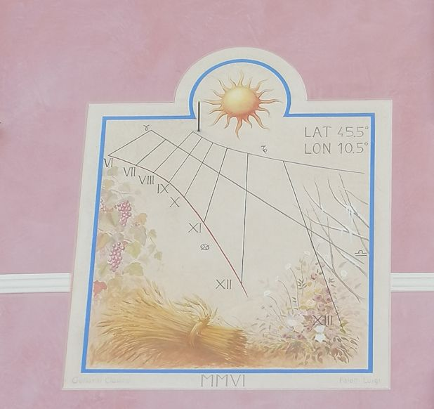

Meridiana 1

Anno fotografia: 2006
Proprietà: Privata — la posizione esatta non è pubblicata
Note: Bellissima meridiana con immagini che rappresentano le stagioni: fiori di campo per la primavera, fascio di grano per l'estate, grappoli d'uva per l'autunno, ramoscelli innevati per l'inverno. Sono rappresentati anche i simboli dei segni zodiacali del toro, del cancro e della bilancia.In basso a sinistra si legge il nome di Claudio Gottardi, artista che l'ha realizzata. In basso in centro l'anno di realizzazione 2006.